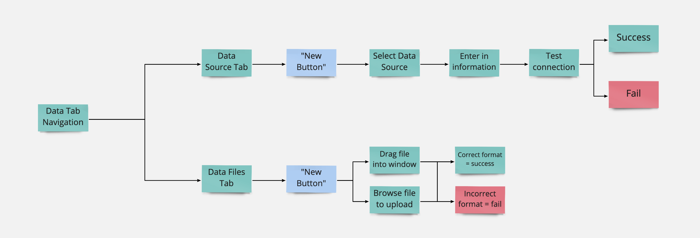

Data File Directory
Product Design
Data analysts using Incorta struggled with a lackluster data file structure that made for an agonizing experience. I designed features for end users of Fortune 500 companies to better manage their data files and data sources. The impact of my contributions led to a significantly improved user workflow and better collaboration, and a higher number of customers upgrading to the newest Incorta release.
opportunity
The Villain of this Story: A Poor File Management System
Incorta is a data analytics software that aggregates large complex business data in real time, eliminating the need to reshape it via data warehousing. Users have long complained about Incorta's lack of support for data file management. Data files were limited to one upload at a time, there was no concept of file locations, and a built-in search function was nowhere to be seen. Additionally, the current Data Files page was one of the few remnants of the outdated Angular framework (everything else on our platform was using React).
Users spent an unnecessary amount of time organizing and locating data files. I started off identifying areas for improvement and worked hand-in-hand with various stakeholders to deliver enhancements to the data analysts' workstream.
the role of design
I led the design for this feature to help data analysts collaborate better and get their time back through a customizable data file structure.
I worked closely with Product to define product requirements and gathered user insights from Solutions Architects. In the later phases, I synced with Engineering to define scope and requirements for handoff.
research and discoveries
Understanding How Incorta Users Manage Data
The PM and Solutions Architects frequently visited customers onsite and were the gateway to my learning about our users, the data analysts. These users fall under the Power User persona. They use advanced analytical tools to dive into the data, working with it in more depth to create visualizations for other stakeholders. But in order to do that, data needs to be brought into their Incorta instance first.
The Data Analyst
Age
33
Job Title
BI/Data Analyst
Role
Responsible for bringing data into Incorta to use. Day to day includes joining objects to create schemas and ultimately, data visualizations to understand business challenges.
Challenges
Behaviors
Incredibly tech savvy and and learns things quickly. Likes customization.
User Story Map
A story map demonstrating the steps users needed to take to bring in their data.
There are two ways of adding data into Incorta. First is by connecting to a database, and second is by way of CSV or Excel files. However, users were confronted with a few challenges when going with the file route.
The Frustrations of Data Files
"Once a file has been uploaded, you can't change the name."
It was a pain having to either remember the file name or to modify the file before upload."I can only upload one file at a time."
Users were frustrated that they couldn't save time with a bulk upload."There's no search feature to find files."
There could be hundreds of data files, but there was no built-in searchbar to locate them."I can't group my files."
Users were annoyed that there was no way to group files for better discoverability.It was revealed that users have been asking for a better navigation structure for a while.
By introducing the concept of folders, users would need a way to traverse through the file path. The only part of our app that utilizes somewhat of a directory structure is the Content tab, where dashboards and folders can be grouped into folders. Users griped about our existing breadcrumb in the Content tab because it didn't provide a hierarchical structure to browse back to higher levels.
The current navigation pattern only showed the current file location.
Users had a few workarounds for some of these challenges.
To ensure that relevant files are clumped together in the listing page, users made sure to name their files a certain way before uploading. It helped them find files more easily, but it was an extra step upfront.
There was no concept of pagination on this page and because everything loaded at once, it would take over five seconds for all the data to appear. Users used Ctrl+F to find what they're looking for, but this would be a challenge for users who can't recall the exact names of these files.
Data Analysts wanted to spend less time on menial tasks so that they can start modelling their data.
A Data Analyst's main duties include interpreting data so they can deliver key insights on how the business is doing. What they don't want to do is spend a lot of time wrangling with data due to lack of features like bulk uploading, searching, sorting, filtering, and folders. Users want to be able to customize their Incorta instance so that these files are discoverable for themselves, and for their peers.
Vision
Our goal was to rethink the Data Files to be more like a directory so that users can better manage their files for a more efficient process.
Criteria for Success
design
Redesigning the Breadcrumb Concept
I looked to a few leaders in the storage space like Google Drive, Onedrive, and Dropbox to get an idea on how to handle file management and navigation. In my design proposal, the new breadcrumb component would show a clear hierarchical structure, and enable easy access to files in that path.
In the V1 of the breadcrumb, I got feedback that the title of the page shouldn't be styled like the rest of the breadcrumb. The reason was because the page title would jump around depending on where it is in the navigation tree. We agreed that the title should assume its own identity, thus it was decided to move the title of the page to the line underneath.
Enhancing the File Storage System
I created flows for the following stories:
You can get a better view of the prototype here on InVision.
Sketch wireframes showing all scenarios. Click here for InVision prototype.
The proposed designs aligned with the requirements, but were met with engineering constraints.
In a sync with the Server and Front-end teams, we learned that they couldn't commit to some of our asks. They allocated resources to some of the higher priority backend projects. Some of the things they couldn't accommodate in the next two sprints include:
As a result of our discussion, we agreed to move some of the enhancements out of our MVP to a later version. I updated the wireframes to limit the scope of actions and handed it off to Engineering.
The Final Design
the delivery and impact
Small Feature Enhancements, Big Increase in Productivity
After about two months, the Data File enhancements were shipped in the Incorta 4.6 release (check out the release notes). Usually, users don't upgrade right away to the newest Incorta platform as it does take an extra bit of effort and overhead. But users were willing to switch to Incorta 4.6 just for the data file enhancements. Users noticed a sizable improvement in their workflow. They were able to finally edit files right inside the Incorta app, share folders with peers, and cut down time by a lot. Users didn't mind that they couldn't move files and folders around in this version, as they were satisfied with this set of enhancements for the time being. Users were pleased to know that we were continuing to improve the directory feature in the next release.
next project
Incorta
Design Library and Dark Mode
Created the Incorta Design System to introduce Dark Mode, which helped the company win over the hearts of prospects and led to upsells of contracts.
View Case StudyCopyright © 2021 Trang Tran
Made from scratch with love and my atrocious code.